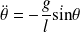
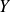
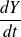
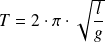
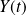
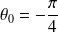
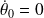
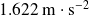

Oscillation d'un pendule
Cet exercice est un petit projet d'ingénierie numérique.
L'objectif de cette étude est de visualiser l'oscillation d'un pendule simple sans avoir à faire les approximations habituelles de petits angles, sur la terre ou sur la lune...
Question
Donner l'équation différentielle de ce pendule, si on note
la longueur du pendule,
 sa masse et
l'accélération de la pesanteur.
sa masse et
l'accélération de la pesanteur.

Question
Écrire une fonction eqdf(args) qui renvoie l'accélération angulaire du pendule en fonction d'arguments judicieusement choisis.
def eqdf(theta, l = 1, g = 9.81):
'''renvoie l'acceleration angulaire en fonction de theta d'apresl'equation differentielle du modele physique.'''return (-g * np.sin(theta) / l)
J'évite d'utiliser des variables globales, ce qui me permettra de modifier les valeurs de et de plus tard.
Question
Pour réaliser ce projet, il est nécessaire d'importer des modules. Écrire ces importations en langage Python.
import numpy as np
import matplotlib.pyplot as plt
Pas d'importation globale !
Question
L'équation différentielle obtenue est du second ordre, un procédé de vectorisation est donc nécessaire.
Écrire une fonction EQDF(args) qui prend en argument un array image de

et renvoie un array image de

.
def EQDF(Y, eqdf, l = 1, g = 9.81):
'''renvoie le vecteur dY/dt en fonction de Y et de la fonction scalairede l'equation différentielle obtenue par la modelisation physique.'''return (np.array([Y[1], eqdf(Y[0], l, g)]))
Attention à ne pas oublier de bien forcer le type de l'objet renvoyé.
Question
Donner l'expression littérale de la période d'oscillation.

Question
En déduire l'écriture d'une fonction qui permette de créer un array T de
 valeurs sur une période d'oscillation. La valeur par défaut de
sera de 1000.
valeurs sur une période d'oscillation. La valeur par défaut de
sera de 1000.
def instants(n = 1000, l = 1, g = 9.81):
'''renvoie un array de n valeurs entre 0 et la periode d'oscillation.'''return (np.linspace(0, 2 * np.pi * pow(l / g, 0.5), n))
Question
Écrire une fonction Euler_vect(args) qui prenne en argument un array T créé par la fonction précédente, l'array Y0 contenant les conditions initiales et EQDF, la fonction vectorisée et l'équation différentielle du modèle physique eqdf, et qui renvoie un array TY contenant les valeurs de

pour chaque instant calculé.
def Euler_vect(T, Y0, EQDF, eqdf, l = 1, g = 9.81):
'''applique le schéma numérique d'Euler à la resolution numerique approcheede l'EQDF pour une discretisation temporelle T et avec les conditions initialesY0.T est un array et non une simple liste, Y0 egalementet EQDF est une fonction dont l'argument est de meme dimension que Y0.'''TY = [Y0]
for i in range(1, len(T)):
TY.append( TY[i -1] + (T[i] - T[i - 1]) * EQDF(TY[i - 1], eqdf, l, g) )
return (np.array(TY))
Question
Donner l'écriture de Y0 pour une condition initiale correspondant à

et

, et de T noté T_terre pour une étude du pendule sur Terre.
Y0 = np.array([- np.pi / 4, 0])
T_terre = instants()
Question
Écrire la fin du programme pour obtenir le tracé de
en fonction du temps
 .
.
Y_terre = Euler_vect(T_terre, Y0, EQDF, eqdf)
plt.title("Oscillation du pendule simple sur Terre.")
plt.plot(T_terre, Y_terre[:, 0])
plt.grid()
plt.show()
Voici le résultat obtenu.
Question
Modifier la commande pour obtenir cette fois-ci le tracé de
en fonction du temps
sur la lune.
L'accélération de la pesanteur sur la lune vaut  .
T_lune = instants(g = 1.622)
Y_lune = Euler_vect(T_lune, Y0, EQDF, eqdf, g = 1.622)
plt.title("Oscillation du pendule simple sur la Lune.")
plt.plot(T_lune, Y_lune[:, 0])
plt.grid()
plt.show()
Voici le résultat obtenu.
Question
Commenter la fin de l'oscillation sur les tracés.
La fin de l'oscillation ne retombe pas exactement sur le point de départ, ce qui n'est pas cohérent avec l'étude théorique. Ce décalage est encore plus visible pour la vitesse si on la traçait.
C'est dû aux imprécisions du schéma explicite de la méthode d'Euler. Pour atténuer ce décalage, il faudrait, soit augmenter le nombre d'instants choisis en faisant varier
, soit opter pour un schéma numérique plus performant.
Question
Citer des schémas numériques plus performants que le schéma explicite d'Euler.
Il y a par exemple le schéma implicite d'Euler et les méthodes de Runge-Kutta d'ordre 2 et 4.